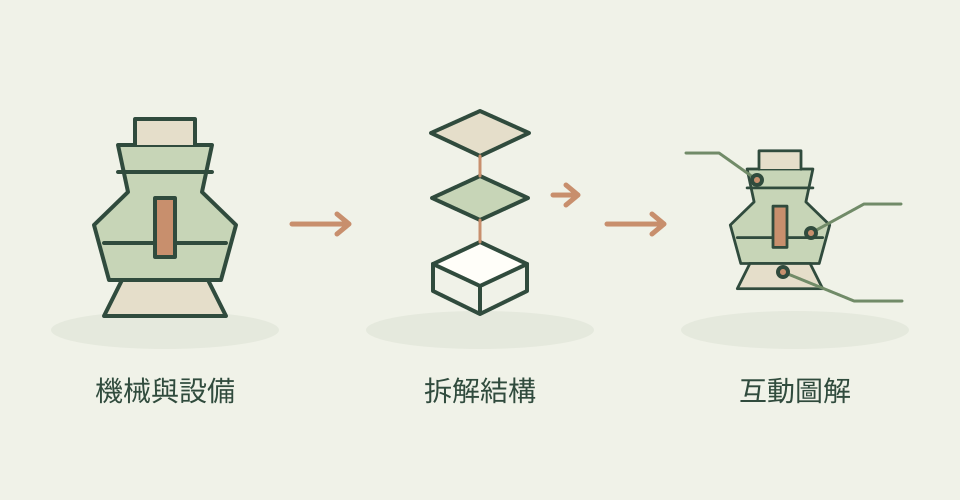

引擎、管線或大型設備，常常很難只靠文字說清楚。Anatomy 專門把真實系統畫成有細節的等距插畫，讓讀者沿著結構與標籤理解它如何運作。
它怎麼幫忙
它以 SVG 為主要圖形形式，並可加入 WebGL 效果與互動。最近的列印指引支援 A4 或 Letter：海報、技術圖及多頁細節版，讓螢幕上的說明也能帶到紙上。
功能快速理解

把機械結構拆開、標出關係，幫助讀者理解各部件如何運作。
功能示意・本站繪製 放大查看可以這樣開口
這是一個可依需求修改的委託範例。
把咖啡機畫成等距剖解圖，標示水箱、幫浦、鍋爐與沖煮頭，說明水的行進路徑，並附一頁 A4 圖解。
適合什麼工作
適合科普、產品機構介紹與需要把設備原理畫清楚的人。
開始之前
- 準備工具
- 能寫程式並檢視圖片的 agent、Node 20.10+、Chrome 或 Chromium。
- 使用成本
- 主要成本是 agent 的使用量；是否使用其他生成服務視工作而定。
- 交付內容
- 互動 SVG／HTML、列印 PDF；WebGL 畫面以影像輸出
- 先留意
- 機械結構仍須核對原始資料；可選的 3D 路線仍屬 beta。
最近的觀察
2026-10-21：較前次增加 744 星；主分支未變更。PDF 列印並非本日新增功能。
作者與來源
本文依作者公開說明整理，沒有實際執行這個專案。功能插圖由本站繪製，原作者範例另行標示；並非本站執行技能的測試結果。GitHub 星數為專案總量，觀察時間為 2026年10月30日 08:27（台北時間）。
與前次快照相比增加 506 星；這不是 GitHub Trending 排名。